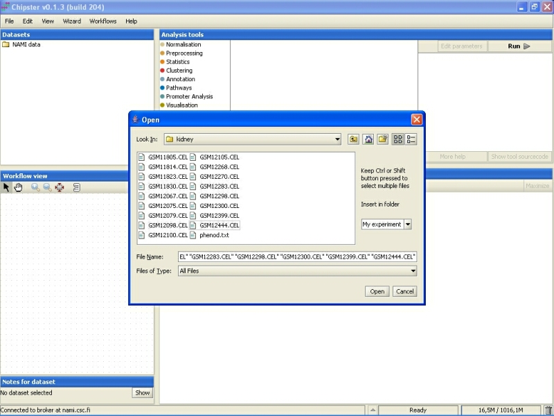
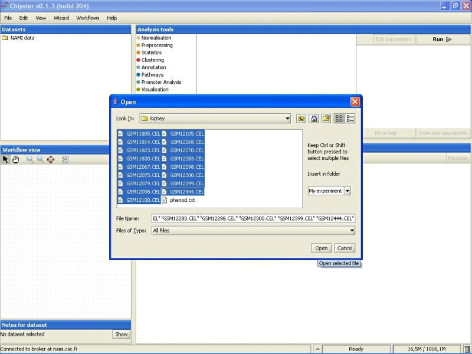
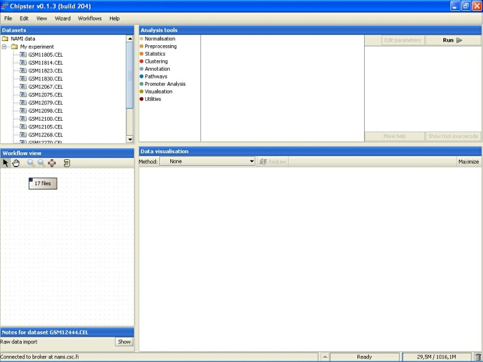

Chipster reads in both text-formatted version 3 CEL-files and binary CEL-files. All CEL-files should be stored in a single folder that can then be imported to Chipster. Select File->Import files, and browse to the correct folder that contains the dataset.
Select the CEL-files you want to import. You can select several files either by pressing down the Control (Ctrl) key or the Shift key.
After the data has been imported, it is displayed under datasets and in the workflow view:
Now the data has been successfully imported, and you should normalize it. You can also run some quality control checks on the raw data.